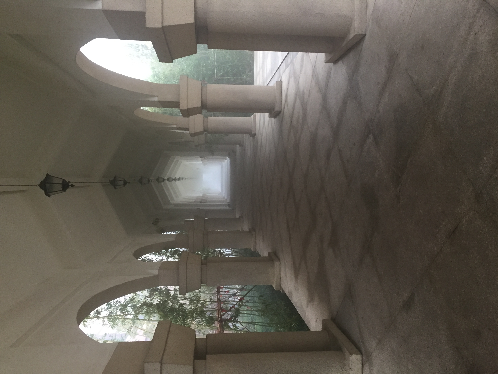

<main class="page-main">
  <div class="container">
    <header class="page-header">
      <p class="card-location">Jiangsu, China</p>
      <h1>Suzhou International Academy</h1>
      <p class="page-intro">A World-Class K12 School in Western Suzhou.</p>
    </header>

    <section class="content-section">
      <div class="school-content">
        <div class="school-image">
          
        </div>
        
        <div class="school-text">
          <p>As a sister school to Yiwu International Academy,Suzhou International Academy opened in September 2015 in glorious buildings occupying a large site in western Suzhou.</p>
          
          <p>SIA offers the Chinese National Curriculum with strong additional English bilingual elements in Grades 1–9. The High School offers IGCSEs and A Levels.</p>
          
          <p>John served as a consultant to the International School in 2018-19, delivering professional development, evaluating teacher performance, providing guidance on UK university application, developing a curriculum bridging Chinese national educational requirements with international pathways and working with leadership on institutional strategy and quality assurance during a period of significant growth.</p>
      </div>
    </section>

    <section class="content-section">
      <a href="portfolio.html" class="btn">← Back to Portfolio</a>
    </section>
  </div>
</main>
